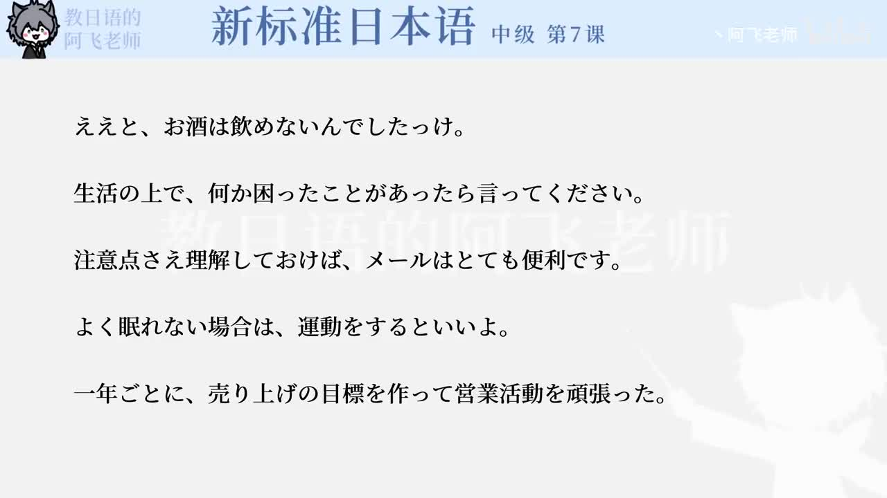

Bilibili P135 · Grammar Briefing
打ち合わせの文法
围绕广告拍摄方案的预备会议，学习怎样确认信息、委婉判断、提出备选方案、赞同回应，以及把讨论结果推进到下一步。
全篇听力精讲
按 11 个语法点轮播。每项依次播放日语例句、中文翻译、接续、语气和易错提醒。
这一讲解决什么
听懂确认区分真正提问、复述确认、回忆确认和反问。
进入会议掌握参考、推测、假设、成为话题等商务表达。
自然回应用「ああ」「はい」「なるほど」衔接对方，而不是只会说「そうです」。
会议会话链
1 · 询问含义どういう意味ですか
2 · 复述确认ということですね
3 · 给出判断だろうと思います
4 · 提出条件上海なら～
5 · 推进方案取り上げてもらう
11组语法与会话表达
会议核心词汇
整块记忆的搭配
练习与复习
来源说明：视频标题、时长和 CID 来自 Bilibili 公开视频接口；P135 无公开字幕。本页依据该视频对应的《新标准日本语》中级第7课教材“语法与表达”整理，不是视频逐字稿。